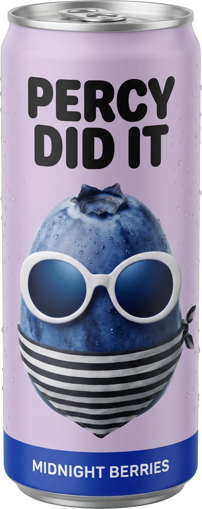
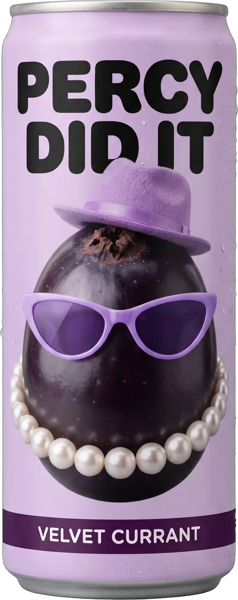
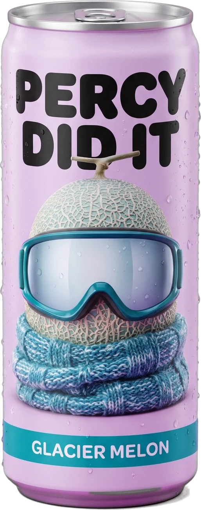
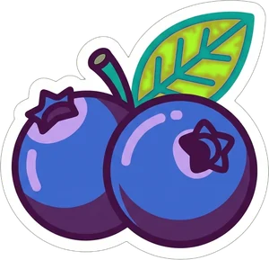

suspiciously fizzy sodas
berries
currant
melon
citrus
productview
productview
product



Sparkling soda with wild blueberry, blackberry and a whisper of basil. Last seen leaving the scene at 2 a.m.
Sparkling soda with blackcurrant, cinnamon and star anise. Smooth talker, spotless record, zero remorse.
Sparkling soda with honeydew, cucumber and cold mint. So chill it was held for questioning as a glacier.
Sparkling soda with lime, yuzu and fresh ginger. Bright, loud and wanted in eleven counties.
Served ice cold
Best right out of the back of the fridge. The colder the can, the stronger the alibi, and the better the fizz.
5 grams of fiber
Prebiotic fiber from chicory root, tucked in where nobody would think to look. Your gut is in on it.
Jumbo fizz
Bigger bubbles, louder pop. Crack a can in a quiet room and watch every head turn like somebody yelled freeze.
Vegan ingredients
No animals were questioned. Only fruit, roots and leaves were involved, and all of them came along quietly.
3 grams of sugar
Just enough to look innocent. Three grams per can keeps the sweet part honest while everything else gets away with it.
Real fruit juice

No mystery syrups, no fruit “inspired by” fruit. We press the real thing, because a good heist starts with something worth stealing.
Some call it suspicious
we call it refreshingWe make Percy suspiciously fizzy (in broad daylight, no less) with real juice and ingredients you would not mind reading into evidence. It’d be a crime to leave a can half full.
Don’t just take our word for it
witnessesMarta Okafor
Tulsa, OKGlacier Melon is all we drink now. My son hid the last can behind the pickles and denies everything.
Jonah Pell
Bangor, MEElectric Citrus should come with a warning. Bright lime, real ginger heat, gone in four sips. I regret nothing.
Sunniva Varga
Boise, IDI thought basil in a soda would be odd, but Midnight Berries won me over. Gave two to my neighbors and now they knock daily.
Theo Delacroix
Macon, GAVelvet Currant tastes like a secret. Cinnamon at the end, pearls on the can, and I am fairly sure the hat winked at me.
case files
Delicious? Definitely. Suspicious? That’s for us to know and you to find out. It’s not a confession if it’s true.
explore all files